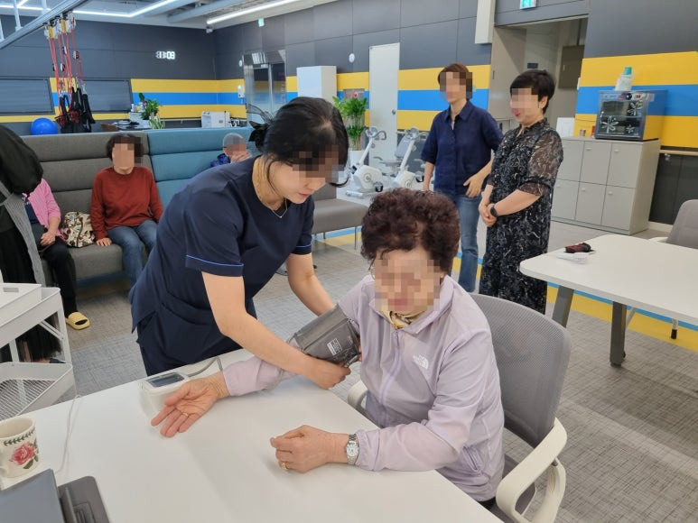
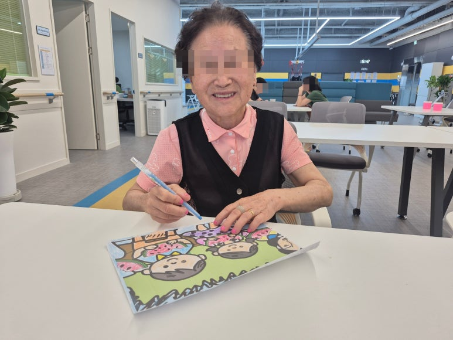
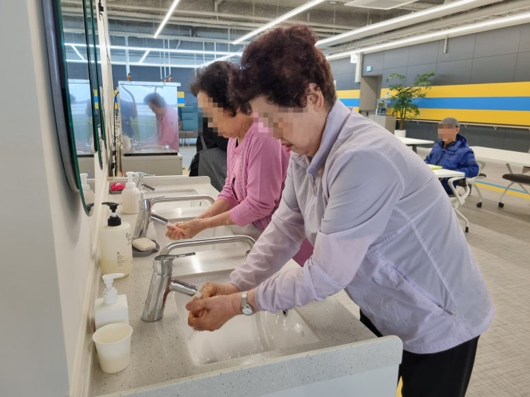
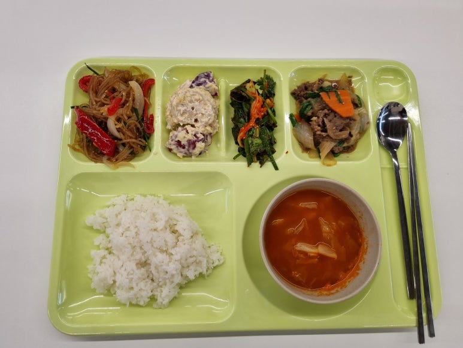
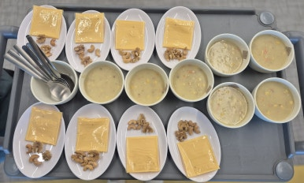

맞춤형 돌봄 안내
지금 할 수 있는 활동부터,
어르신의 속도에 맞춰 함께합니다.
걷고 일어서는 동작이 얼마나 편안한지, 평소 복용하는 약은 무엇인지, 대화와 활동에는 어떻게 참여하시는지 살펴봅니다. 식사와 이동에 필요한 도움도 함께 확인해 어르신의 현재 생활에 맞는 프로그램을 안내합니다.
같은 프로그램이라도 참여 방법은 달라질 수 있습니다. 보행 상태와 체력, 인지 수준과 당일 컨디션을 고려해 활동 범위와 도움의 정도를 조절하고, 활동 사이에는 충분히 쉴 수 있도록 돕습니다.

운동재활
스마트 운동재활 서비스
슬링과 워킹레일, 순환운동을 활용해 걷기와 몸의 움직임을 연습합니다. 어르신이 무리하지 않는 범위에서 신체활동에 참여하고 일상에 필요한 움직임을 이어갈 수 있도록 돕습니다.
슬링·워킹레일 활동
몸을 지지하는 장비를 활용해 서기와 걷기 등 보행에 필요한 동작을 연습합니다. 어르신의 보행 상태에 맞춰 참여 방법을 안내합니다.
순환운동과 신체활동
의자에 앉아 목과 어깨를 풀고 팔을 뻗는 활동, 짐볼을 활용한 신체활동 등을 진행합니다. 자세를 살피며 어르신이 움직일 수 있는 범위 안에서 함께합니다.
컨디션에 맞춘 참여
활동 중 피로감과 불편함을 살피며 강도와 휴식 시간을 조절합니다. 방문 상담 시 실제 장비와 운동 공간을 확인하실 수 있습니다.

건강 관리
의료·간호 서비스
센터에서 지내시는 동안 어르신의 건강 상태를 살핍니다. 혈압·혈당 등 확인이 필요한 항목과 평소 복용하는 약을 파악해 일상 속 건강 관리를 돕습니다.
혈압·혈당 등 상태 확인
등원 후 간호요원이 혈압과 체온 등을 확인하고, 전날 잠은 잘 주무셨는지와 아픈 곳은 없는지 살핍니다. 혈당 등 개별적으로 필요한 관리 사항도 함께 확인합니다.
복용약과 시간 확인
보호자가 전달한 복용약 정보와 처방 내용을 바탕으로 센터 이용 시간 중 필요한 투약 관리 사항을 확인합니다.
건강 상태를 고려한 돌봄
어르신의 컨디션을 운동과 식사, 휴식에 함께 반영합니다. 이용 상담 때 복용약과 평소 주의해야 할 건강 정보를 알려주시면 도움이 됩니다.


인지와 정서
인지·정서 지원 서비스
기억하고 집중하는 시간, 대화하며 마음을 나누는 시간을 함께 마련합니다. 활동의 결과보다 어르신이 편안하게 참여하고 자신의 생각을 표현하는 과정을 중요하게 생각합니다.
인지 자극과 집중
색깔 공 분류하기, 조각 그림을 각자 색칠해 하나의 작품으로 연결하는 협동 만들기 등을 진행합니다. 색과 모양을 구분하고 손을 움직이며 함께 완성하는 시간을 갖습니다.
대화와 정서적 교류
초가집을 그리며 고향 이야기를 나누는 회상 활동, 익숙한 노래를 함께 부르는 노래교실을 진행합니다. 생신잔치와 문화공연 등 함께 즐길 수 있는 시간도 마련합니다.
부담을 줄인 참여 방식
이해 정도와 관심에 맞춰 설명과 활동의 난이도를 조절합니다. 낯선 환경에 익숙해지는 속도와 그날의 기분도 함께 살핍니다.

편안한 일상
생활 지원 서비스
센터 안에서 이동하고 활동에 참여하고 쉬는 일상의 순간을 돕습니다. 어르신이 스스로 할 수 있는 부분은 존중하면서 도움이 필요한 동작을 살펴 지원합니다.
이동과 활동 참여
생활 공간과 프로그램 공간을 오갈 때 보행 상태와 이동 동선을 살피고, 필요한 도움을 제공합니다.
일상생활의 필요한 도움
개인 생활과 활동 준비 등에서 어려움을 느끼는 부분을 확인합니다. 모든 일을 대신하기보다 어르신의 남아 있는 능력을 활용할 수 있도록 돕습니다.
활동과 휴식의 균형
피로하거나 쉬고 싶으실 때 편안하게 휴식할 수 있도록 살피고, 생활 리듬과 컨디션에 맞춰 하루를 보낼 수 있도록 지원합니다.


식사 지원
영양 관리 서비스
균형 잡힌 식사와 위생적인 조리 환경을 바탕으로 어르신의 식생활을 지원합니다. 식사량과 식사 중 불편함을 살피고, 개별적으로 주의할 사항을 확인합니다.
균형 잡힌 식사
센터 내 조리실에서 직접 조리한 따뜻한 식사를 제공합니다. 아침에는 죽이나 스프 등을 준비하고, 점심·저녁 식사와 간식으로 하루 식생활을 지원합니다.
개별 식사 상태 확인
저염식과 다진식, 알레르기와 매운 음식 선호 여부를 고려합니다. 블로그에는 매운 반찬을 별도로 조리하고 김치 대신 백김치를 제공한 사례도 소개되어 있습니다.
위생적인 조리와 식사 환경
조리 공간과 식사 환경을 위생적으로 관리하고, 혼자 식사하기 어려운 어르신께는 식사 보조를 제공합니다. 필요한 도움과 식단 조절 범위는 이용 전에 함께 확인합니다.
세부 활동과 참여 방식은 어르신의 상태와 센터 운영 일정에 따라 달라질 수 있습니다. 방문 상담에서 어르신에게 맞는 이용 내용을 함께 확인해 주세요.
VISIT CHECK
방문하시면 프로그램 공간을 직접 확인할 수 있습니다.
- 슬링과 워킹레일이 설치된 운동재활 공간
- 인지 활동을 진행하는 테이블과 생활 공간
- 편안하게 쉬는 휴게 공간과 안전한 이동 동선
- 건강 상태와 이용 계획을 이야기하는 상담 공간
- 위생적으로 관리하는 조리실
자주 묻는 질문
실버런 프로그램 FAQ
남양주 주간보호센터에서는 어떤 프로그램을 하나요?
실버런은 슬링·워킹레일·순환운동을 활용한 운동재활, 혈압·혈당·투약 관리, 인지·정서 활동, 생활 지원과 식사 지원을 제공합니다.
운동재활 프로그램은 모든 어르신이 같은 방식으로 참여하나요?
아닙니다. 어르신의 보행, 근력과 건강 상태를 살핀 뒤 안전하게 참여할 수 있는 활동과 강도를 상담해 안내합니다.
입소 전에 프로그램 공간을 볼 수 있나요?
네. 방문 상담을 통해 운동재활, 인지활동, 휴게, 상담 공간과 생활 동선을 직접 확인할 수 있습니다.
정보 확인 기준
프로그램과 시설 정보는 실버런 주야간보호센터의 실제 운영 내용과 현장 사진을 기준으로 정리했습니다. 장기요양보험 이용 대상과 급여 제도는 국민건강보험공단 공식 안내에서 확인할 수 있습니다.
국민건강보험공단 장기요양급여 안내